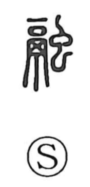

融

Kun: tokeru, yawaragu, tooru | On: yuu
to melt ・ to dissolve ・ to fuse ・ to soften ・ to pass through
Explanation
This character is a compound of 鬲, a three-legged iron cooking tripod that also served to store food, and 蟲 (虫), insects. The original image is of matter left in the tripod rotting and liquefying as insects breed within and swarm out, which gives the core sense of melting and dissolving. From this, expressions like 融然 and 融融 evoke a heart that softens and grows serene, and the character further extends to the ideas of easing, becoming mild, and things pervading or passing through.